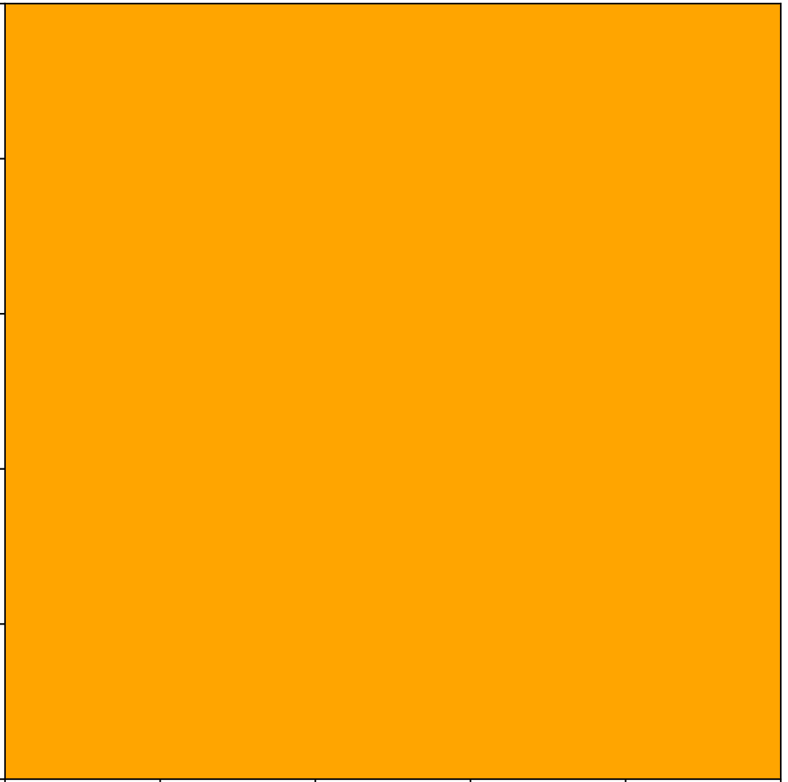
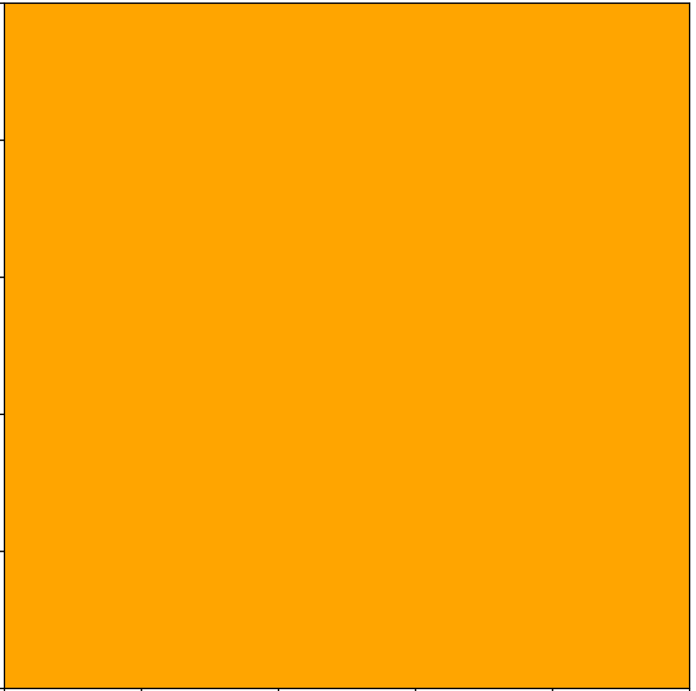

Um autômato celular (AC) consiste numa grade de células, conhecida como domínio, na qual cada célula pode estar em um dentre inúmeros estados. No modelo, a cada passo de tempo, as células têm seus estados alterados por uma função que recebe seu estado atual e os estados de suas células vizinhas.
Essa função, chamada de regra, pode ser composta por operações matemáticas e condições lógicas e é aplicada a todas as células do domínio.
Um exemplo simples é o modelo SIR. Neste, existem três estados: suscetível, quando a célula pode ser contaminada, infeccioso, quando a célula está infectada e pode contaminar seus vizinhos, e recuperado, quando a célula se recuperou da doença e agora está imune a esta.
As regras são:
- Uma célula suscetível é infectada se ao menos um vizinho está infectado;
- Uma célula infectada se recupera se ao menos um de seus vizinhos estiver recuperado;
- Uma célula recuperada nunca muda de estado;
Executando as regras acima com um domínio gerado aleatoriamente, obtém-se o seguinte resultado


 

Objetivos
O autômato celular, como toda ferramenta de modelagem matemática, tem como objetivo simular e estudar comportamentos. Em especial, eles são muito utilizados no estudo de populações em um campo bidimensional. Em seu livro A New Kind of Science, Stephen Wolfram discute suas aplicações na matemática, física e biologia, entre outras áreas.